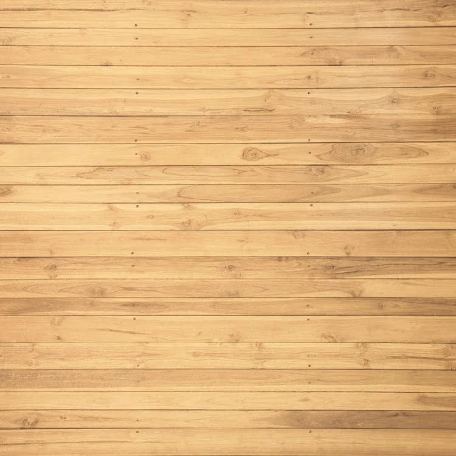
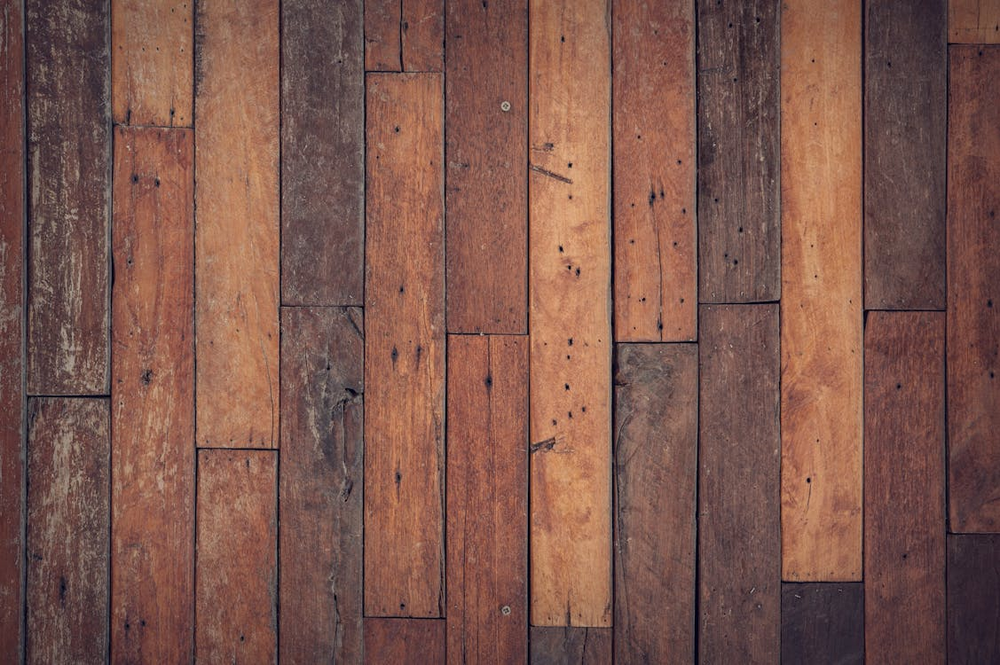

Bienvenidos a MaderAvilés: Carpintería de Calidad en Asturias
En MaderAvilés, somos una empresa de carpintería especializada en el corte de madera a medida, ubicada en la encantadora ciudad de Avilés, Asturias, España. Con años de experiencia en el sector, nos hemos convertido en un referente para profesionales y particulares que buscan soluciones personalizadas en madera de alta calidad. Nuestro compromiso es ofrecer productos excepcionales, adaptados a las necesidades específicas de cada cliente.

Nuestra tienda y almacén proporcionan un servicio eficiente y profesional: los clientes pueden solicitar cortes precisos en distintos tipos de madera, asegurando siempre los mejores acabados. Ya sea para proyectos de bricolaje, muebles personalizados o grandes instalaciones, en MaderAvilés garantizamos resultados que cumplen con los más altos estándares.
En nuestra página web, hemos diseñado una experiencia fácil de usar con un menú de navegación intuitivo, ubicado en la parte superior izquierda. Desde allí, puedes acceder a las secciones clave de nuestro servicio: Pedidos, Piezas y Detalles de Productos. Esta funcionalidad permite gestionar y consultar tus pedidos, ver las piezas disponibles, y conocer detalles específicos de cada producto que ofrecemos.

Confía en MaderAvilés para dar vida a tus ideas en madera. ¡Tu proyecto merece la mejor calidad!